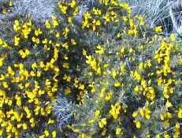

des g'zettes |
Bein seux j'viyons d'autres couleurs étout car mêler parmi tout l'vêrt nou' trouve dé difféthente flieurs lé long des fossés et banques dans pré et clios, quand i'c'menchent toutes à lus s'êpanni en couleu.
Tchiquefais ch'est la couleu d'un ouaisé qu'attrape l'yi à sûffliotter quand i'l'es jutchi sus eune branque ou muthaille dé gardîn, ou bein embarrasser en chèrche dé mangi pour sa nichie dé p'tits muchie dans tchique brousses dans l'vaîsinné.
Ichin en Jêrri, en pliein clios nou'vait la p'tite vaque Jêrriaise, à paître, n'pas au lian à ch't heu comme lé temps passé, mais toutes abannan avec un seul fil d'électrique lé tout du clios pour les garder toute là ensembl'ye. Malheureusement i'sont bétôt toutes sans cornes ou 'cônes' comme i' disent par amout. Mais tchique aigue à la bieauté d'la campângne en Jêrri acouo' pus ch'est qu'nou peut vaie la mé au liain. Jêrri étant si p'tit, la mé et les falaises f'thont tout l'temps les deux, partie d'la campângne qué j 'viyons.
Naturellement not'te campângne comme bein d'autre lé tout du monde rap'tiche et à changi. La campângne dans l'temps 'tait la piêche de travas au campângnard - mais d'pus en pus lé monde veinne i'd'meuther, et villais et touriste veulent i'v'nin étout, pour lus promener lé long des c'mîns, falaises, parmi les c'mins campângne et tchique nou s'appelle les 'green lanes' à ch't heu. Pour ieux ch'est un moment d'êrpos, n'pas pour vaie les récoltes du fêrmyi, n'i ses vaques, mais pour prendre l'air hors dé toutes ches offices là et boutiques en ville.
 A chutte saison 'chin lé tout d'la côte nou'vait lé jaune du geon et du g'nêts tout flieuthi. Feûgièthe déjà êr'dêhalent dé sont dormi souos tèrre èr'vêrdie banque et côti acouo eune faie. Bruëthe ichin et là, en bouton prette pour fourni sont tapis d'pourpre flieurs dans l'av'nin. Comme nou 'rentre acouo pus en vrai campângne, les fossés et p'tites banques sont toutes vêrtes comme du pouothé - dé gros tigots s'êcappent du mitan dé toutes les fieil'yes pour touonner en flieurs et graines pus tard.
Lé potithon ou cracot étout sé prépathe pour nos mouontrer ses flieurs toutes comme des clioches penduent sus un vêrt bâton. Les ronches c'menchent à s'allouongni et l'êpigne a perdu toutes ses blianches flieurs duthant la dreine bouffée d'vent tchi pâssi.
Pus prés d'têrre lé mérgot et lé pipot sont en pliene saison et d'ogue, ort'chie at le tcheurdron n'en pon perdu d'temps à lus s'êtabl'yi d'nouvé. L'dgêrrue étout ramont muthaille et bouais à toute forche et l'chuchet c'menche à s'êpanni et à nos gâter acouo eune fais auve sa bel'odeur.
Tchique nou' n' vait pon fort àch't heu d'gia ch'est des ièrs dé boeu et des pavots comme nou viyez dans l'temps, parmi bétôt touos les betchets d'avoût, et lait'chon don, qué comme mousse nou' tait oblygi d'rammasser aupres l'école finie, à la pannelée, pour souongni es lapîns eune fais qui'tait bein êvanni; car si 'nou 'lus donner ch'na trop frais ou mouoilli, ch'tait l'lapîn tchi s'êvannisser, et pour bouan étout, avec eune bouanne colique.
Hélas éyou qu'est touos ches jours là hors quand auve not'te maitrêsse d'école, la Miss Norman, ichîn à l'école êlémentaithe à St Ouën j'allinmes à pid en route pouor lé Creux Baillot et aime fais là, dans l'pré au Connétab'lye Jim Lé Bro dé St Ouën, aut'fais faithe eune p'tite pronmenade à pid, a chutte saison 'chin; pour vaie, examiner et êcouter à la campângne comme tout êrc'mencher à s'révilyi. Sav'ous bein - ch'tait la, la milleu léçon dé toutes.
E. Syvret
Viyiz étout: